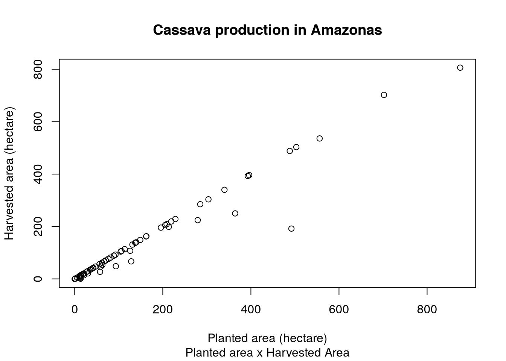
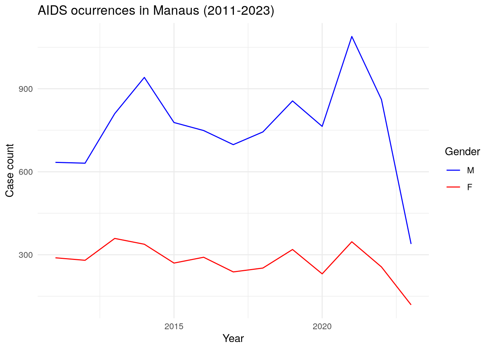
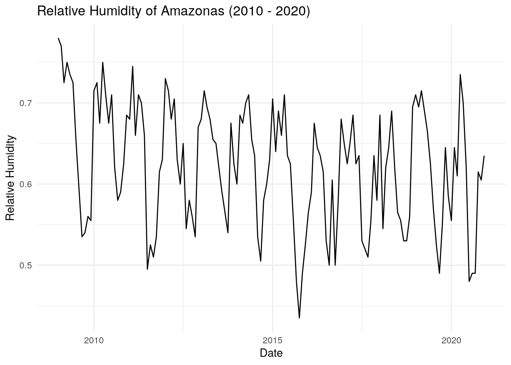
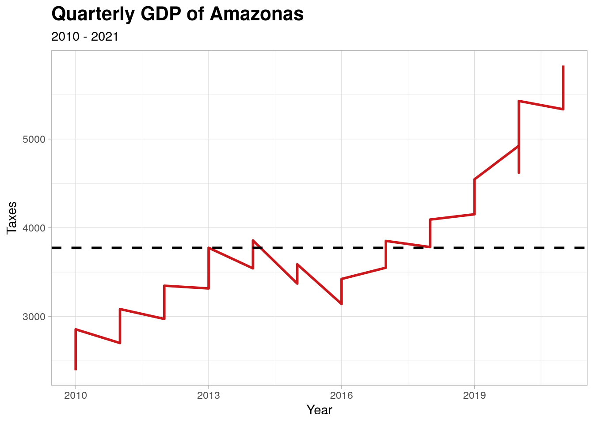
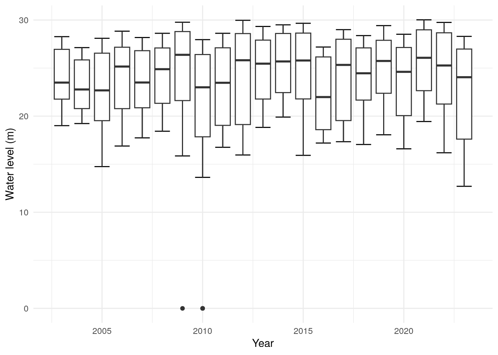
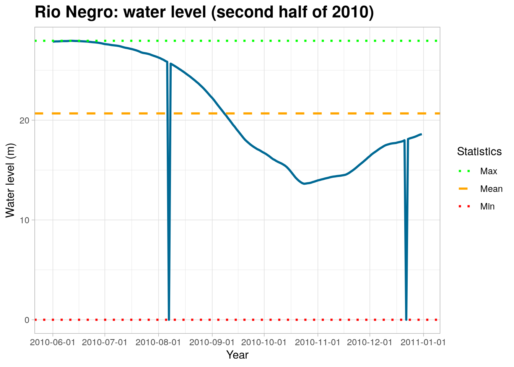

library(amazonasdatahub)Data Visualization and Analysis
See how easily you can create plots from the data available in this package
Datasets tutorials
For each dataset, you can check the documentation using ? before the dataset name.
?agriculture_idam
?aids_amazonas
?humidity_manaus
?malaria_amazonas
?pib_trimestral
?rionegro_amazonas
?school_read_levelsScatter plot
The dataset agriculture_idam provides crop production data from Amazonas. We can make a scatter plot of planted area and harvested area of filtered productions, In this example, we will use cassava production.
To plot a simple scatter plot in R, without using external packages, we will use the plot function.
# Filtering data
mandioca_prod <- agriculture_idam[agriculture_idam$cultivation == "Mandioca", ]
# Scatter Plot
plot(
mandioca_prod$planted,
mandioca_prod$harvested,
xlab = "Planted area (hectare)",
ylab = "Harvested area (hectare)",
main = "Cassava production in Amazonas",
sub = "Planted area x Harvested Area"
)
Time Series of AIDS case counts in Manaus
The dataset aids_amazonas contains data of the AIDS occurrences in each municipality from Amazonas.
One of the analysis that can be made is: visualize the time series of counts filtered by municipality, where each case is grouped by the sex/gender of each observation. To do this, we will use the dplyr package to structure the data and the ggplot2 package to create and customize the chart.
# Loading dplyr and ggplot to structure the data
require(dplyr)
require(ggplot2)
# Filtering by municipality and ploting case count by gender
aids_amazonas %>%
filter(name_muni == "Manaus") %>%
group_by(gender) %>%
ggplot(aes(x = year, y = cases, group = gender, color = gender)) +
geom_line() +
scale_color_manual(values = c("blue", "red")) +
theme_minimal() +
labs(
title = "AIDS ocurrences in Manaus (2011-2023)",
x = "Year",
y = "Case count",
color = "Gender"
)
Time Series of relative humidity from Manaus (2010 - 2020)
The humidity_manaus consists of the minimum relative humidity observed in the city of Manaus from January 2009 to December 2020. We can visualize the time series of the relative humidity during this time interval.
Using dplyr, we can create a date column, which will be composed of the month and year, and ggplot2, we can create the time series chart.
# Loading dplyr and ggplot to structure the data
require(dplyr)
require(ggplot2)
# Creating date column and plotting the time series
humidity_manaus %>%
mutate(date = as.Date(paste0(year, "-", month, "-","01"))) %>%
ggplot(aes(x = date, y = rh)) +
geom_line() +
theme_minimal() +
labs(
title = "Relative Humidity of Amazonas (2010 - 2020)",
x = "Date",
y = "Relative Humidity"
)
Time series of Quarterly GDP of Amazonas
With the data from pib_trimestral, we can perform analyses regarding the patterns observed in the distribution of data over the observed interval (2010 to 2021).
Using dply and `ggplot2, we can select the variables of interest and creating a line chart. This example will demonstrate this application, as well as more advanced customizations, including colors, title font formatting and line types.
# Loading dplyr and ggplot2
require(dplyr)
require(ggplot2)
# Selecting only year and taxes and ploting
pib_trimestral %>%
select(year, taxes) %>%
ggplot(., aes(x = year, y = taxes)) +
geom_line(linewidth = 1L, colour = "#cb181d") +
geom_hline(
yintercept = mean(pib_trimestral$taxes),
linetype = "dashed",
size = 1
) +
theme_light() +
theme(
plot.title = element_text(face = "bold", size = 16)
) +
labs(
x = "Year",
y = "Taxes",
title = "Quarterly GDP of Amazonas",
subtitle = "2010 - 2021"
)
Boxplots of water level (in meters) of Rio Negro (Amazonas)
With the data provided by rionegro_amazonas, one of the analysis that can be done is visualizing a chart of boxplots of water level over the years.
We will be using dplyr and ggplot2.
# Loading ggplot
require(ggplot2)
rionegro_amazonas %>%
ggplot(aes(x = year, y = level_m, group = year)) +
stat_boxplot(geom = "errorbar") +
geom_boxplot() +
theme_minimal() +
labs(
x = "Year",
y = "Water level (m)"
)
Code
require(dplyr)
require(ggplot2)
# Filtering dates for the second half of 2010
rionegro_amazonas_2010_02 <- rionegro_amazonas %>%
filter(date >= "2010-06-01" & date <= "2010-12-31")
# Graphical Visualization
rionegro_amazonas_2010_02 %>%
ggplot(., aes(x = date, y = level_m)) +
geom_line(size = 1L, colour = "#006994") +
geom_hline(
aes(
yintercept = mean(rionegro_amazonas_2010_02$level_m),
color = "Mean"
),
linetype = "dashed",
size = 1
) +
geom_hline(
aes(
yintercept = min(rionegro_amazonas_2010_02$level_m),
color = "Min"
),
linetype = "dotted",
size = 1
) +
geom_hline(
aes(
yintercept = max(rionegro_amazonas_2010_02$level_m),
color = "Max"
),
linetype = "dotted",
size = 1
) +
scale_color_manual(
name = "Statistics",
values = c(
"Mean" = "orange",
"Min" = "red",
"Max" = "green"
)) +
scale_x_date(
date_breaks = "1 month"
) +
theme_light() +
theme(
plot.title = element_text(face = "bold", size = 16)
) +
labs(
x = "Year",
y = "Water level (m)",
title = "Rio Negro: water level (second half of 2010)"
)
Missing data and outliers
Part of the Statistician’s job is to identify and find certain errors and inconsistencies in the data. As we can see, the graph above shows that the level of the Rio Negro in meters was at 0. This is strange and uncommon, as it would indicate that the river completely dried up.
We can conclude that these “0” values correspond to missing data (NAs), which were filled with a zero value. We will replace these zero values with NAs.
require(tidyr)
rionegro_amazonas_2010_02 <- rionegro_amazonas_2010_02 %>%
mutate(
level_m = case_when(
date == "2010-08-07" ~ NA_real_,
date == "2010-12-22" ~ NA_real_,
TRUE ~ as.numeric(level_m)
),
increase_decrease_cm = case_when(
date == "2010-08-07" ~ NA_real_,
date == "2010-12-22" ~ NA_real_,
TRUE ~ as.numeric(increase_decrease_cm)
)
)Handling Missing Values
Now that we have defined the missing values, we can choose a method to handle them. In this example, we will use Forward-Fill, but we encourage you to research and try other methods to learn different ways of handling missing values.
require(tidyr)
rionegro_amazonas_2010_02 <- rionegro_amazonas_2010_02 %>%
fill(level_m, increase_decrease_cm)With the processed data, we can recreate the plot and visualize the level of the Rio Negro.
Code
require(dplyr)
require(ggplot2)
# Graphical Visualization
rionegro_amazonas_2010_02 %>%
ggplot(., aes(x = date, y = level_m)) +
geom_line(size = 1L, colour = "#006994") +
geom_hline(
aes(
yintercept = mean(rionegro_amazonas_2010_02$level_m),
color = "Mean"
),
linetype = "dashed",
size = 1
) +
geom_hline(
aes(
yintercept = min(rionegro_amazonas_2010_02$level_m),
color = "Min"
),
linetype = "dotted",
size = 1
) +
geom_hline(
aes(
yintercept = max(rionegro_amazonas_2010_02$level_m),
color = "Max"
),
linetype = "dotted",
size = 1
) +
scale_color_manual(
name = "Statistics",
values = c(
"Mean" = "orange",
"Min" = "red",
"Max" = "green"
)) +
scale_x_date(
date_breaks = "1 month"
) +
theme_light() +
theme(
plot.title = element_text(face = "bold", size = 16)
) +
labs(
x = "Year",
y = "Water level (m)",
title = "Level of the Rio Negro (processed) in the second half of 2010."
)
Therefore, it is noteworthy that the treatment of these outlie values, which were considered missing, made all difference in the conclusion about the data on the level of the Rio Negro.